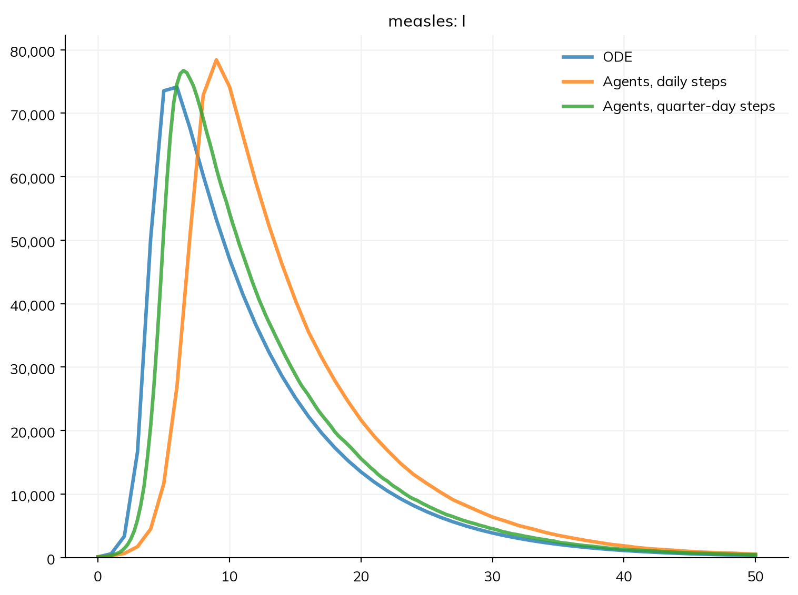

flowchart LR
subgraph Sim["<b>Sim</b>: population, time span, step, random seed, solver"]
direction TB
P["<b>People</b><br/>compartments or agents"]
D["<b>Diseases</b><br/>states, transitions, rates"]
N["<b>Networks and contacts</b><br/>who meets whom"]
G["<b>Demographics</b><br/>births, deaths, pregnancy"]
I["<b>Interventions</b><br/>vaccines, tests, treatment,<br/>changes to parameters"]
C["<b>Connectors</b><br/>links between diseases"]
A["<b>Analyzers</b><br/>extra results"]
end
Sim --> R["<b>Results</b><br/>stocks, flows, ratios,<br/>outcomes, over time"]
Data["<b>Data</b>"] -.-> R
Conceptual overview
This page is the mental model of Starsim on one page: what a model is made of, what happens when it runs, and how Starsim decides whether to run it as compartments or as agents. Each section links to the user guide page that covers its topic in full. For a hands-on start, see T1 – Getting started.
The parts of a model
A Starsim model is a sim (ss.Sim): a population, a span of time, and a set of modules that say what happens to the population. The modules are of a few kinds, each with its own job:
- Diseases are the heart of most models. A disease says what states people can be in (the compartments, such as S, I, and R), and how they move between them (the transitions, each with a rate or a duration). See Diseases.
- Networks and contacts say who meets whom: everyone equally (homogeneous mixing, the default), by a contact matrix between groups such as age groups, or through a network of contacts between individuals. See Contact networks and Population data.
- Demographics add and remove people: births, deaths from causes other than the diseases, migration, and pregnancy. See Demographics.
- Interventions act on the model: vaccinating, testing, and treating people, or changing a parameter from a date (closing schools, say). See Interventions and Products.
- Connectors link modules, such as one disease making another more likely. See Connectors.
- Analyzers record results that the other modules don’t keep, without changing anything. See Analyzers.
Most models need only a disease and a sim; the other kinds are added as the question needs them. The sim itself holds what applies to the whole model: the population (total_pop=, or n_agents= for agents), the time span and step (start=, stop=, dt=), the random seed, and the solver.
People: as compartments or as agents
The same population can be represented in two ways:
- As compartments, people are counted: there are 92,000 people in S, 3,000 in I, and so on (and, in a model stratified by age, so many in each age group in each state). This is the representation of a classical compartmental model, and it is fast, whatever the size of the population.
- As agents, each person is represented individually, with their own age, sex, state of each disease, and contacts. This is needed when something in the model is about individuals: a network of particular partnerships, a history (how long ago this person was vaccinated), or a value that varies continuously between people. An agent can stand for several people (
total_pop=1_000_000, n_agents=10_000: each agent is 100 people).
The model itself doesn’t say which: a disease written as states and transitions means the same thing either way, and in the agent-based run each person moves between states at the same rates as people do between compartments. See People and agents.
States, transitions, and rates
A disease is declared the way a compartmental model is drawn: as boxes and the arrows between them. S >> I @ 1.9*I is the arrow from S to I, taken at a rate of 1.9 per day times the share of people who are infectious (frequency-dependent transmission, as in a textbook SIR model); I >> R @ ss.days(8) is the arrow from I to R, taken after 8 days on average.
import starsim as ss
S, I, R = ss.states('S I R')
infection = S >> I @ 1.9*I # From S to I, at 1.9 per day times the share infectious
recovery = I >> R @ ss.days(8) # From I to R, after 8 days on average
measles = ss.Disease(infection, recovery, init_prev=0.001)
measles.diagram()flowchart LR
S(["S"])
I(["I"])
R(["R"])
S -.->|"infection: 1.9 × I"| I
I -->|"recovery: 8 days"| Rflowchart LR
S(["S"])
I(["I"])
R(["R"])
S -.->|"infection: 1.9 × I"| I
I -->|"recovery: 8 days"| R
This is a simplified measles outbreak, the example that runs through the tutorials and this guide. Because the model is a description rather than code, Starsim can read it: it can write out its equations (measles.equations()), draw its diagram (as above), work out its basic reproduction number (measles.R0(), about 15 here), and list everything it assumed (sim.describe()). See Writing models.
A transition is driven by one of a few things: a rate (events per person per unit of time), a duration (the mean time spent in the state, or a distribution of times), or a transmission rate, which depends on contact with people in another state. Several transitions out of the same state compete; one transition can split between several destinations, each with its probability. Anything that a state-and-transition description can’t say, such as an antibody level that each person carries and that declines continuously, is written as Python code in a module of its own; see Custom modules.
Parameters and time
The numbers in a model are its parameters: the 1.9 and the 8 days above. A parameter lives where it is used, and can be given a name, a plausible range, and a source with ss.par(), so that it can be documented, changed by name (ss.Sim(measles, pars=dict(beta=1.5))), and fitted to data. A value can be the same for everyone, differ by group (ss.by(age=[...])), change over time (ss.timeseries(), ss.seasonal()), or vary between people (a distribution). See Parameters.
Every rate is per some unit of time and every duration is in some unit, so values carry their units: ss.perday(1.9), ss.days(8), ss.peryear(0.02). Starsim converts each to the step of the sim, so that a model can mix daily transmission with yearly births, and the same model can be run with a step of a day or a week. A bare number takes the model’s unit. See Time.
How a run proceeds
sim.run() first builds the sim (sim.init(), which can also be called on its own): it fills in the values given by name, chooses the unit of time and the solver, creates the people, places them in their starting states, and prints a line saying what it will run and how. Then it takes the steps from start to stop. In each step, the modules are called in a fixed order, so that each sees what the modules before it did:
- Time moves on, and so do the random number streams.
- Demographics: people are born, and deaths are requested.
- Connectors, networks (contacts form and dissolve), then interventions (so that someone vaccinated today is protected from today’s transmission).
- Diseases: transmission, and every other transition.
- Deaths take effect, and the results of the step are recorded.
- Analyzers read the finished step.
Within a disease, the transitions have no order: transitions out of the same state compete, as they do in an ODE. A module can have a step of its own (yearly births in a model with daily transmission), and runs on the steps at which it is due. Model execution gives the full order.
After the run, the results are in sim.results, by module: for each disease, a result for each state (a stock: how many people are in it at each time point) and each transition (a flow: how many made it in each step), plus any other quantity the model declares, such as prevalence, or reported cases worked out from the flows (an outcome). Data attached to the sim is matched to the results by name, for plotting and fitting. See Results, Outcomes, and Plotting.
How the solver is chosen
The solver is the method that turns the model into numbers over time. There are five:
| Solver | People are | Randomness |
|---|---|---|
'ode' |
Compartments, holding fractions of people | None: the expected course of the epidemic |
'binomial' |
Compartments, holding whole people | Each step, the number moving is a random draw (a chain binomial) |
'gillespie' |
Compartments, holding whole people | Each event happens at a random time (exact) |
'tau' |
Compartments, holding whole people | Many events at once (tau-leaping, close to exact) |
'abm' |
Agents | Each person’s events are random |
By default (solver='auto'), a model runs as an ODE if every part of it can be written as compartments, and as agents if anything needs individuals: a network of individual contacts, n_agents=, or a module written as code. The sim says which it chose and why, and solver= overrides it. Here is the same measles model run as an ODE and as agents, with two lengths of step:
pars = dict(total_pop=100_000, stop=ss.days(50), verbose=0)
sims = [
ss.Sim(measles, label='ODE', **pars),
ss.Sim(measles, n_agents=20_000, label='Agents, daily steps', **pars),
ss.Sim(measles, n_agents=20_000, dt=ss.days(0.25), label='Agents, quarter-day steps', **pars),
]
msim = ss.parallel(sims)
for sim in sims:
print(sim.label, '-', sim.solver_reason)
msim.plot('measles.I')ODE - every part of the model has a compartmental form
Agents, daily steps - n_agents was given
Agents, quarter-day steps - n_agents was given
The sims have different steps, so msim.plot() plots each against its own time points. Their results can’t be put together as runs of one thing, so what needs that, such as the median across runs (msim.summarize(), or a band in the plot), raises an error saying so.
With quarter-day steps, the agents follow the ODE closely, with a little noise from chance: in a large, well-mixed population, the two are the same model. With daily steps, the agents’ epidemic comes about three days late. Agents take each step whole, and measles spreads so fast (early on, the number infectious grows almost sixfold a day) that a day is a long step for it; the ODE has no steps to take. Starsim prints a note when a step may be too long for the rates in a model, and sim.check_dt() measures how much it matters. Otherwise, the solvers differ where chance or individuals matter: in small populations, at the start of an outbreak (which may die out by chance), and with networks of particular contacts. Solvers and backends shows where, and which to use.
Declared and written as code
Most of a model is declared: states, transitions, rates, stratifications, interventions, and outcomes are descriptions that Starsim reads, which is what lets it print the equations, choose a solver, and run the model as compartments. Parts that need arbitrary logic are written as code: a Python class with a step() method, called once each step, that can read and change anything in the sim. The two can be mixed freely in the same sim; a sim with a module written as code that tracks individuals runs as agents. See Custom modules, and the Architecture pages for how the pieces fit together under the hood.
Further reading
- Compartmental models in epidemiology: the SIR family of models, and their equations
- Appropriate models for the management of infectious diseases: why the distribution of durations, not only their means, matters
- Simulation-based inference for epidemiological dynamics: course notes on stochastic compartmental models, with pomp
- Covasim: An agent-based model of COVID-19 dynamics and interventions: the design of an agent-based model with the same module structure as Starsim